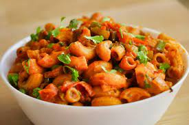

Delectable Sight, innit?
The cheese sauce is oh so rich, thick, silky, and creamy, the pasta is al dente, and the breadcrumb topping is crisp and crunch
Ingredients
- Cheese
- Macaroni
- Pasta
- Milk
- Butter
- Cheddar Cheese
- Flour
- Salt
Instructions for preparation
- 6 cups water
- 4 tbsp. margarine or butter
- 1/4 cup 2% milk
- Boil water in medium saucepan
- 9:00 stir in macaroni
- Cook 8 to 10 min. or until tender, stirring occasionally.
- Drain: Do not rinse. Return to pan
- Add margarine, milk and cheese sauce mix; mix well.
- To prepare with less fat: Prepare as directed, using 2 tsp. unsalted butter and 1/4 cup fat-free milk
Back to top
Back To Home